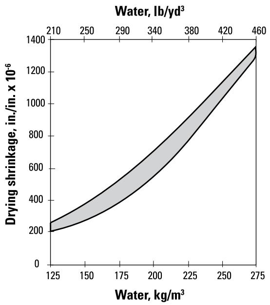
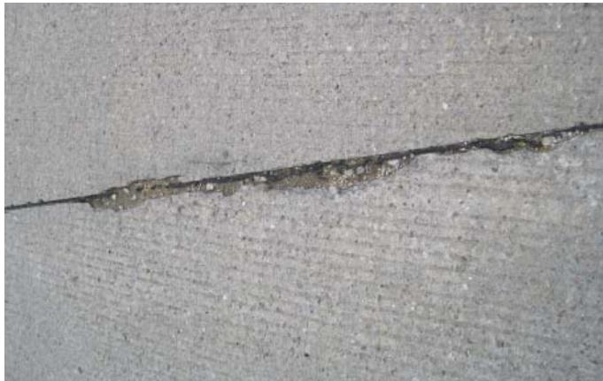

Cracking Mitigation
Cracking mitigation is the systematic application of design, material selection, and construction practices intended to prevent or limit fracture formation by ensuring that internal tensile stresses remain below the concrete’s limited capacity to resist tension. Fractures occur when volume changes induced by shrinkage, thermal contraction, freeze-thaw action, or external loads are restrained by surrounding structural elements, generating forces that exceed the material’s tensile strength [1]. The fundamental mechanisms of mitigation involve controlling moisture loss and temperature gradients during early hydration to ensure uniform strength development, while strategic joint design provides predetermined planes for the safe release of shrinkage and thermal stresses [2]. Effective implementation requires balancing trade-offs in mix proportions and curing methods to manage differential movement between aggregate and cement matrix, thereby protecting the structure from deleterious chemical ingress and extending its service life [3] [4].
Cracking Mitigation covers a suite of strategies designed to preserve pavement integrity by addressing the root causes of structural degradation. Concrete Cracking serves as the primary diagnostic indicator that necessitates these targeted interventions. Moisture Management mitigates damage by controlling water movement and retention during curing and service. Sealant Application complements this approach by sealing joints and cracks to prevent moisture infiltration. Temperature Management addresses thermal distress by controlling gradients and hydration rates to prevent temperature-induced cracking.
Sources (4)
Sub-concepts (4)
Key findings
- Revealed that consistent, standards-compliant curing is the most influential factor in preventing plastic-shrinkage, scaling, and spalling by maintaining uniform moisture and temperature throughout the slab [3] [2] [4].
- Demonstrated that cracking mitigation functions as a systems problem requiring tightly coordinated material selection, construction practices, and maintenance actions rather than isolated fixes [1] [3].
- Found that early-age volume changes driven by uncontrolled shrinkage and thermal expansion are the primary causes of cracking, making their management through mix design and environmental control critical for service life [1] [3].
- Showed that joint performance depends critically on precise saw-cut execution, including selecting the correct timing, blade type, and speed to activate joints without inducing micro-cracking or moisture entrapment [3].
- Measured that higher specified concrete strengths often increase cement paste volume, which amplifies shrinkage and reduces durability, creating a cross-cutting trade-off between structural strength and cracking resistance [1].
- Observed that freeze-thaw damage is triggered when the degree of saturation exceeds a critical threshold, making consistent air-void system quality as important as the total air content for durability [3].
- Evaluated that joint deterioration is governed by excess water combined with inadequate air-void systems and chemical attacks from reactive deicing salts, necessitating proactive moisture management and salt-selection policies [3].
- Reported that solvent-based poly-alpha-methylstyrene curing compounds outperform wax- or resin-based alternatives in retaining water, prompting agencies to prescribe their use for effective crack mitigation [4].
Integrated and Systems-Level Mitigation Frameworks
Evidence: 4 reports (3 primary)
Cracking mitigation is a systematic approach that integrates design, material selection, and construction practices to keep internal tensile stresses below the concrete’s limited capacity to resist tension [1]. The primary mechanisms generating these stresses include restrained shrinkage, thermal contraction, differential movement of the slab, and freeze-thaw actions that produce expansive forces within the pore structure [1] [3]. Effective mitigation requires a cross-cutting framework where moisture management ensures uniform hydration strength gain, temperature control limits thermal gradients, and strategic joint design provides predetermined planes for stress release [1] [2]. Implementing these measures involves balancing trade-offs between mix properties such as paste content and air-void systems to ensure the concrete develops strength faster than imposed stresses, thereby preventing uncontrolled fracture propagation [1] [3].
The figure below illustrates how total shrinkage results from the summation of various individual mechanisms that contribute to cracking risk.

Relationship between total water content and drying shrinkage. [1]The figure plots a shaded region representing the range of drying shrinkage values against varying levels of water content in concrete, demonstrating that higher water volumes lead to increased volume change.
Research problem — Current mitigation strategies often fail because they address individual factors in isolation rather than managing the coupled thermal, moisture, and chemical interactions that drive premature joint deterioration [3]. There is a critical need for unified quality-control frameworks that synchronize early-age curing, environmental regulation, and joint detailing to prevent uncontrolled volume changes and tensile stress accumulation [2] [4]. Existing practices lack the integrated coordination required to mitigate cross-cutting risks where moisture ingress and temperature fluctuations simultaneously compromise structural integrity and accelerate deterioration [1] [3].
The following figure illustrates the joint deterioration that results from these unmitigated coupled interactions.

Joint deterioration (Photo courtesy of Jim Grove, FHWA) [3]The image displays a longitudinal crack in a concrete surface where the joint material has failed and spalled away. This visual evidence of premature deterioration around joints illustrates the failure modes that cracking mitigation strategies aim to prevent by managing volume changes and tensile stresses.
State of the art — The field has shifted from isolated remedies to integrated systems-level frameworks that coordinate material selection, structural support, joint strategy, curing practices, and predictive analytics to address cross-cutting mechanisms like moisture ingress and thermal stress [1] [3] [2]. Contemporary best practice relies on data-driven planning using tools such as HIPERPAV to model cracking risk under specific environmental conditions, enabling proactive adjustments to mix designs and construction sequencing before distress manifests [1] [2]. Implementation involves synchronizing rigorous moisture and temperature management with precise joint execution, utilizing real-time monitoring technologies like maturity meters and embedded sensors to time saw-cutting within critical strength windows [3] [2].
The following figure illustrates how effective curing practices directly influence the optimal timing for joint sawing.
 The impact of good curing on the joint sawing window (after ACPA 2011). [2]
The impact of good curing on the joint sawing window (after ACPA 2011). [2]
The figure plots concrete strength and internal stress against time to define a “Sawing Window” bounded by the onset of excessive raveling if cut too early and cracking if cut too late. A green shaded region represents this window, which is extended when curing fosters concrete strength development while delaying the development of internal stresses in the concrete. The graph illustrates that effective moisture management during early hydration allows contractors to time saw-cutting within critical strength windows, thereby preventing uncontrolled cracking.
Findings from the reports
- Identified early-age curing as the most influential factor for preventing plastic-shrinkage and scaling, noting that uniform moisture retention is essential to avoid curling and warping stresses [3] [2].
- Demonstrated that exceeding a critical degree of saturation (approximately 85%) triggers freeze-thaw cracking, emphasizing the need to maintain moisture levels below this threshold through entrained air and low water-to-cement ratios [3].
- Revealed that variability in air-void content significantly reduces predicted service life, showing that inconsistent air-void systems can halve durability even when average air content remains constant [3].
- Showed that precise application of curing compounds, including calibrated delivery rates and visual confirmation of coverage, is critical for ensuring adequate protection against rapid moisture loss in paving projects [2].
- Observed that joint performance depends critically on saw-cut execution, where selecting the correct timing, blade, and speed prevents micro-cracking and ensures proper stress relief [3].
- Established that treating drying shrinkage and thermal expansion as explicit design inputs improves predictions of tensile stresses, highlighting trade-offs between high specified strengths and increased cracking risk due to higher paste volumes [1].
- Reported that integrating mix proportions, environmental forecasts, and construction schedules into holistic modeling tools helps identify high-risk periods for early-age cracking within the first 72 hours of placement [1].
- Found that joint durability is governed by excess moisture combined with inadequate air-void systems and chemical attack from reactive deicing salts, necessitating proactive salt-selection policies [3].
Novelty & rigor — The research introduces a probabilistic sorption model that explicitly links moisture uptake to freeze-thaw cracking thresholds while accounting for mix-design variability through Monte Carlo simulation, moving beyond deterministic approaches [3]. This framework integrates cross-cutting controls such as mandatory vibration monitoring, optimized aggregate gradations, and real-time P-wave propagation devices to precisely time joint sawing, thereby addressing the shared problem of joint saturation through a unified performance-based strategy rather than isolated remedies [3]. Reproducibility is achieved by adhering to specific material specifications, including slag cement incorporation and strict air-void system targets, alongside calibrated procedural controls for moisture saturation studies and chemical-induced cracking tests under continuous water contact [3].
The following figure illustrates how the degree of saturation influences stiffness degradation resulting from freeze-thaw damage.
 Influence of the degree of saturation on stiffness degradation due to freeze-thaw damage. [3]
Influence of the degree of saturation on stiffness degradation due to freeze-thaw damage. [3]
The figure plots relative stiffness against the degree of saturation for concrete mixes with varying air-void contents, showing that stiffness remains high until a critical threshold is exceeded. Once the material reaches this critical state, damage initiates and stiffness degrades rapidly regardless of the quantity or quality of the air system.
Reported values
| Parameter | Value | Context | Source |
|---|---|---|---|
| air content | 6 percent% | freeze-thaw durability targets | [1] |
| air temperature | 86°F | minimum for more than one-half of any 24-hour period in hot-weather paving | [1] |
| air temperature drop | 20°F | cold front air temperature reduction increasing cracking risk | [1] |
| average daily air temperature | 77°F | hot-weather paving condition threshold | [1] |
| concrete strength | 300 lb/in2 | minimum strength for edges of fresh slab before construction equipment access | [1] |
| concrete temperature | 50°F | minimum maintenance temperature for at least 72 hours after placement | [1] |
| curing time | 72 hours | minimum time to keep traffic/equipment off pavement for curing compound protection | [1] |
| critical degree of saturation | 85 percent | Figure 2-1 | [3] |
| critical degree of saturation | 85 percent% | degrees of saturation below which damage does not initiate | [3] |
| critical degree of saturation range | 78 to 91 percent% | depending on the quality of the air-void system | [3] |
| maturation period before deicing chemical exposure | at least 30 days | newly placed concrete not exposed to deicing chemicals | [3] |
| time of failure | 13.8 years | higher variability in air content | [3] |
| time of failure | 17.2 years | higher variability in air content | [3] |
| time of failure | 7.9 years | higher variability in air content | [3] |
| curing compound application rate | 1 gallon per 150 square feet | FAA requirement | [2] |
10 more distinct values omitted here; the full span-verified set is in the quantities sidecar.
Across the reviewed reports, cracking mitigation is consistently characterized as a systems-level problem that requires the tight coordination of material properties, construction practices, and environmental controls rather than reliance on isolated fixes. While early-age volume changes driven by uncontrolled shrinkage and thermal expansion are identified as primary causes of distress, effective mitigation hinges on precise management of moisture and temperature through standardized curing protocols and calibrated application techniques to prevent rapid water loss. Holistic frameworks integrate these operational controls with predictive modeling tools that account for mixture variability and environmental forecasts, recognizing that trade-offs in mix design—such as higher cement content increasing strength but also shrinkage risk—must be balanced against the need for consistent air-void quality and joint performance. [1] [3] [2]
The figure below illustrates the sequential steps for adjusting concrete mixture proportions as part of this proactive process control.
 Sequential steps for adjusting concrete mixture proportions as part of proactive process control. [2]
Sequential steps for adjusting concrete mixture proportions as part of proactive process control. [2]
The figure displays a four-stage workflow diagram illustrating the progression from laboratory design to production management, specifically highlighting validation and fine-tuning phases. This process supports cracking mitigation by ensuring that mixture proportions are adjusted proactively during field trials to manage volume changes and prevent fracture formation.
Implications — Cracking mitigation must transition from isolated repairs to an integrated, life-cycle strategy that coordinates moisture control, joint integrity, and chemical exposure management throughout the structure’s service life [3]. Designers are required to incorporate volume-change mechanisms into early-stage analysis to optimize slab geometry and joint spacing, while balancing durability choices against their potential to inadvertently increase shrinkage risks [1]. Construction practice must enforce curing as a critical control point through stringent quality assurance, calibrated application equipment, and adaptive method selection based on real-time weather conditions to prevent distress [2].
Limitations — Current mitigation frameworks rely on model-based predictions that are constrained by incomplete material property databases and assumptions of continuous wetness, which often do not reflect actual field conditions [3]. The effectiveness of cross-cutting practices such as curing and joint sawing is limited by strict timing requirements, environmental dependencies, and the impracticality of maintaining optimal conditions during construction [1] [3]. Mitigation strategies must account for inherent material trade-offs where durability-focused mix designs can inadvertently increase cracking risk, alongside regional factors that limit the universal applicability of standard guidelines [1].
Predictive Modeling & Mitigation
Evidence: 3 reports (2 primary)
Predictive modeling for concrete cracking mitigation relies on simulating the internal stresses generated by moisture loss, thermal gradients, and chemical ingress to anticipate fracture formation [4]. Effective mitigation strategies focus on controlling these stressors during the critical curing phase through methods such as moisture retention and temperature regulation to ensure adequate strength development [4]. Long-term protection often involves applying penetrating sealers that create hydrophobic barriers to limit the ingress of deleterious agents without trapping internal moisture [4].
State of the art — Current practice employs an integrated regime that combines early-age curing controls with long-term matrix fortification to address both thermal and moisture-driven deterioration [4]. Field consensus favors solvent-based poly-α-methylstyrene coatings for superior uniform wetting during the critical early period, followed by silane- or siloxane-based penetrating sealers to create hydrophobic barriers against ingress [4]. The approach involves significant trade-offs regarding cost and handling for solvent compounds, precise timing requirements for insulation blankets to avoid thermal stress, and application challenges for vertical joints where sealer performance may degrade over time [4].
Findings from the reports
- The FHWA-developed HIPERPAV software predicted crack formation with an accuracy of approximately five hours, enabling estimation of the optimal window for saw-cutting and other mitigation actions [1].
- Solvent-based poly-alpha-methylstyrene curing compounds demonstrated superior water retention performance compared to wax- or resin-based water-based products [4].
- Rapid cooling following the removal of insulation blankets triggered premature cracking, particularly when used in cold weather conditions [4].
- Insulation blankets increased internal concrete temperature to accelerate strength gain for early traffic opening but required careful timing to avoid thermal shock on hot days or during cold-weather removal [4].
Novelty & rigor — This approach uniquely shifts from conventional weather-control checks to a predictive framework that flags likely cracking and estimates optimal saw-cutting windows by comparing predicted stresses against allowable limits, enabling proactive adjustments before damage occurs [1]. The methodology demonstrates high reproducibility through its validation across multiple sites, showing the ability to forecast crack formation within approximately five hours of actual occurrence, thereby providing a reliable tool for practitioners to mitigate thermal and moisture-induced distress [1].
Across the reviewed reports, predictive modeling tools such as HIPERPAV provide a quantitative framework for estimating early-age cracking risk by projecting stress development over specific time windows, which directly informs the timing of critical mitigation actions like saw-cutting and traffic reopening. While modeling identifies the window of opportunity for intervention, effective mitigation simultaneously requires controlling moisture loss and temperature during curing to prevent stress accumulation that models alone cannot fully mitigate without proper physical controls. [1] [4]
The following figure illustrates this concept by displaying an example plot from HIPERPAV that indicates a high risk of cracking approximately six hours after paving.
 A plot of tensile stress and strength development over time showing a warning when stress exceeds strength. [1]
A plot of tensile stress and strength development over time showing a warning when stress exceeds strength. [1]
The figure displays two curves plotted against elapsed time: a solid line representing the concrete’s developing strength and a dashed line representing the internal tensile stress.
Implications — Designers and contractors must prioritize tightly coordinated curing strategies that simultaneously manage moisture loss and thermal gradients, particularly when utilizing high early-strength mixes or set-accelerating admixtures [4]. Specification practices should favor solvent-based poly-alpha-methylstyrene curing compounds due to their superior surface wetting and defect reduction capabilities, while carefully balancing the risks of rapid early opening against potential thermal distress [4].
Limitations — Predictive models for mitigation strategies often fail to account for the high variability in field execution, such as improper mixing or delayed application, which can render theoretical controls ineffective [2]. Standardized testing protocols may not capture site-specific environmental interactions, leading to unreliable predictions when conditions like wind, heat, or rapid temperature differentials deviate from controlled parameters [2] [4].
Related concepts
In this hierarchy
- Child: Concrete Cracking
- Child: Moisture Management
- Child: Sealant Application
- Child: Temperature Management
Related by shared evidence
- Aggregate Management — shares 4 reports
- Cement Chemistry — shares 4 reports
- Cementitious Materials — shares 4 reports
- Concrete Mixture Design — shares 4 reports
- Concrete Production — shares 4 reports
- Concrete Testing — shares 4 reports
- Joint Maintenance — shares 4 reports
- Joint Sealing — shares 4 reports
Similar topics
- Pavement Management
- Pavement Repair
- Concrete Cracking
- Pavement Management
- Joint Sealing
- Paving Operations
- Pavement Design
- Aggregate Management
References
- Integrated Materials and Construction Practices for Concrete Pavement: A STATE-OF-THE-PRACTICE MANUAL (2019)
- Best Practices Manual: Quality Control and Quality Acceptance of Concrete Airport Pavement (2025)
- Guide to the Prevention and Restoration of Early Joint Deterioration inConcrete Pavements (2016)
- Concrete Pavement Preservation Guide (Third Edition) (2022)
Feedback on this page